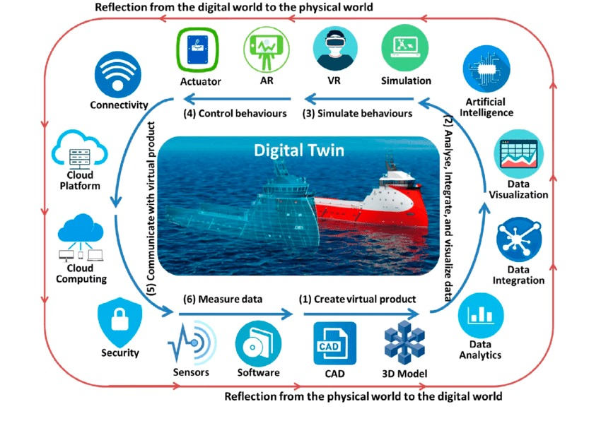

A digital twin is a virtual representation of a real-world objects , system , or process . It accurately reflects the physical counterpart by using real -time data , simulations , and machine learning to mirror its behavior and performance . This digital model can be used to monitor , analyze , and optimize the physical entity throughout its lifecycle . Digital twins are widely used in various industries , including manufacturing , healthcare , and urban planning to improve efficiency , predict failures , and enhance decision making .
Streaming data is a continuous flow of data generated by various sources , such as sensors , log files , and servers , in real time . This data is processed as it arrives , allowing for immediate analysis and action .
Streaming data is used in various applications , such as real - time analytics , fraud detection , and monitoring systems .
Streaming data is incredibly important for several reasons .
1960s : NASA begins using basic twinning concepts to simulate and monitor system in space missions . This includes creating physical duplicates on Earth to match systems in space ; such as during the Apollo 13 mission .
1991 : David Gelernter anticipates the concept of digital twins in his book " Mirror Worlds " .
2002 : Dr Michael Grieves formally introduces the term " Digital Twin " during a presentation on Product Lifecycle Management (PLM) at the University of Michigan .
2010 : NASA further develops the digital twin concept to improve the simulation of spacecraft , making it a more practical tool for engineering and maintenance .
2017 : Digital twins become one of the top strategic technology trends , driven by advancements in the Internet of Things (IoT) and data analytics .
2020s : Digital twins are widely adopted across various industries including manufacturing , healthcare , and Urban Planning , for real time monitoring , predictive maintenance , and optimization .
Advancements in IoT , AI , and data analytics have significantly propelled the development of digital twins .
Internet of Things (IoT):
IoT devices , equipped with sensors , collect real - time data from physical assets . This data is crucial for creating accurate digital twins that mirror the physical world . IoT ensures seamless communication between devices , enabling continuous data flow and updates to the digital twin .
Artificial Intelligence (AI):
AI algorithms analyze data from IoT devices to predict future states and behaviors of physicals assets . This helps in proactive maintenance and optimization . AI can identify patterns and detect anomalies in the data , providing early warnings and preventing potential issues .
Data Analytics:
Advanced data analytics processes vast amounts of data to generate actionable insights . This helps in understanding the performance and health of physical assets . Data analytics enables the optimization of operations by identifying inefficiencies and suggesting improvements .
Integration and Impact:
The integration of these technologies allows digital twins to provide a comprehensive and dynamic representation of physical assets . This leads to improved decision - making , enhanced operational efficiency , and reduced downtime .
These are the physical components that collect data from the real - world object or system . They measure various parameters such as temperature , pressure , speed , and more .
The collected data is stored in databases or cloud storage systems . Efficient data management is crucial for handling the large volumes of data generated .
These tools process the data to generate insights . Advanced analytics , including machine learning algorithms , can predict future states and optimize performance .
This is the platform through which users interact with the digital twin . It can be a dashboard , a mobile app , or any other interface that provides real - time insights and control .
Sensors collect real - time data from the physical object .
The data is transmitted to the data twins via network (e.g., Wi-Fi , cellular satellite ) .
The digital twin processes the data using analytics tools to generate insights .
Insights are sent back to the physical object to optimize performance or predict maintenance needs .
1. Immediate Decision - Making : Enables quick , informed decision .
2. Enhanced Customer Experience: Offers personalized interactions.
3. Operational Efficiency: Optimizes processes and reduces costs.
4. Competitive Advantage: Helps stay ahead of competitors.
5. Risk Management: Identifies and mitigates risks promptly.
6. Data Accuracy: Ensures decisions are based on the latest information. Real-time data processing is essential for agility and responsiveness in today’s fast-paced world.
Processing data closer to the source (at the edge) reduces latency and bandwidth usage . This is crucial for applications requiring immediate responses .
Cloud services provide scalable storage and processing power . They enable complex analytics and machine learning models to run on the data .
Technologies like Apache Kafka , Apache Flink , and AWS Kinesis facilitate the continuous flow and processing of streaming data .
By continuously monitoring equipment , digital twins can predict failures before they occur , reducing downtime and maintenance costs .
Real - time data helps in adjusting production parameters to optimize efficiency and quality .
Digital twins of patients can monitor vital signs in real - time , alerting healthcare providers to any anomalies .
By analyzing real-time data , treatments can be tailored to individual patients' needs .
Digital twins of cities can simulate various scenarios , helping planners make informed decisions about infrastructure development .
Real-time data from traffic sensors can optimize traffic flow and reduce congestion .
Digital twins of vehicles can monitor and optimize performance , enhancing safety and efficiency .
Real - time data is crucial for the safe operation of autonomous vehicle , allowing them to respond to changing conditions instantly .
1. Improved Decision - Making : Real-time insights enable better and faster decision - making .
2. Cost Saving : Predictive maintenance and optimized operations reduce costs .
3. Enhanced Efficiency : Continuous monitoring and optimization improve overall efficiency.
1. Data Privacy : Ensuring the privacy and security of data is a significant concern .
2. Complexities : Integrating various technologies and systems can be complex and require significant investment .
3. Computational Power : Real-time data processing requires substantial computational resources.
1. Intelligent Twins : AI can make digital twins more autonomous , capable of learning from data and making decisions without human intervention .
2. Predictive Analytics : Advanced machine learning models can predict future states with high accuracy , enabling proactive measures .
1. Wider Adoption : As technology advances , digital twins will become more accessible and scalable , allowing their adoption across various industries .
2. Interoperability : Future digital twins will be more interoperable , able to integrate seamlessly with other systems and technologies .
1. Green Technologies : Digital twins can help optimize energy usage and reduce waste , contributing to more sustainable practices .
2. Environment Monitoring : Real-time data can monitor environment conditions , helping in the management of natural resources .
Digital twins , powered by streaming data , represent a significant leap forward in how you interact with and optimize the physical world . As technology continues to evolve , the potential applications and benefits of digital twins will only grow , making them an essential tool in various industries .